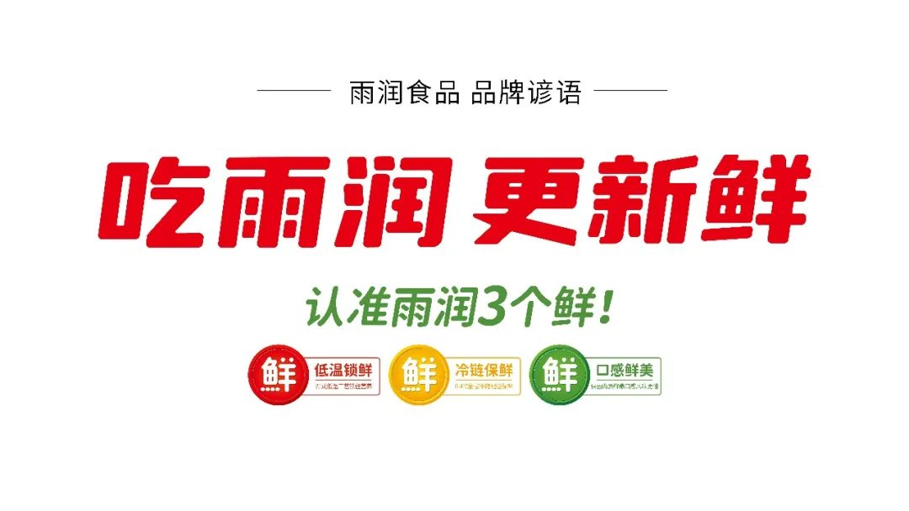

01 · 定义
用一句话锁定品牌的核心价值
“新鲜”是产品价值，但只有被固定表达、反复使用，才能成为品牌资产。项目用品牌谚语把企业优势转化为消费者容易记忆的购买提示。
02 · 识别
用波点花边建立跨产品的视觉共同体
花边不是装饰，而是能在不同版式和包装形态中重复的识别资产。统一后，消费者能够在货架上更快找到雨润产品。

03 · 包装
让每个SKU都说同一件事
不同品类保留各自的产品信息，同时把品牌名称、谚语与花边放在稳定位置。包装由单品说明书升级为雨润品牌的持续媒体。